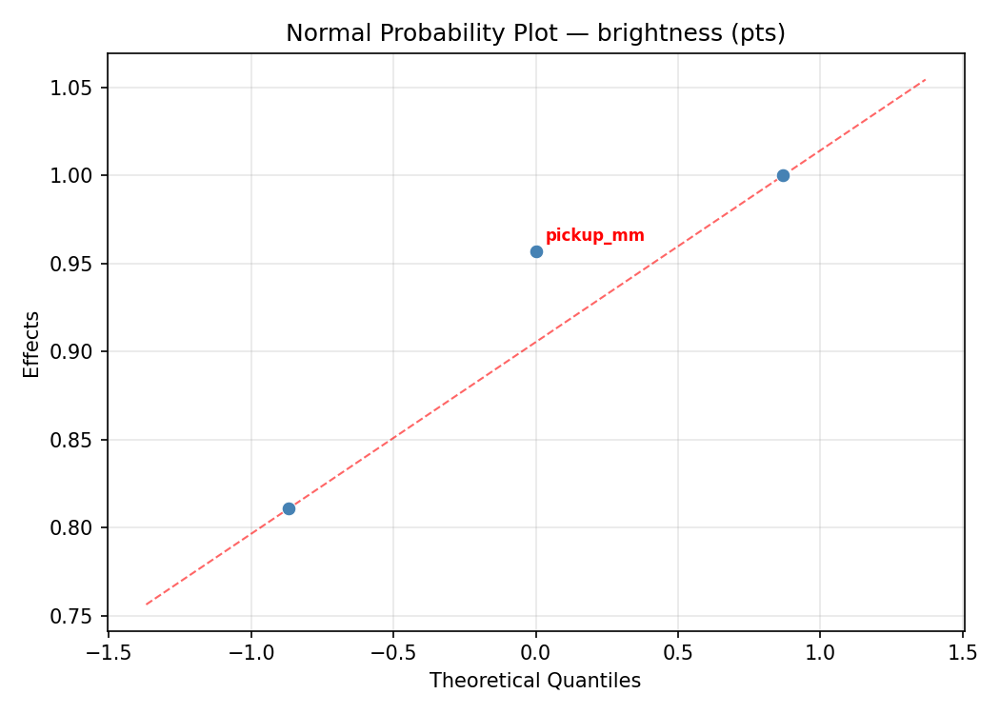
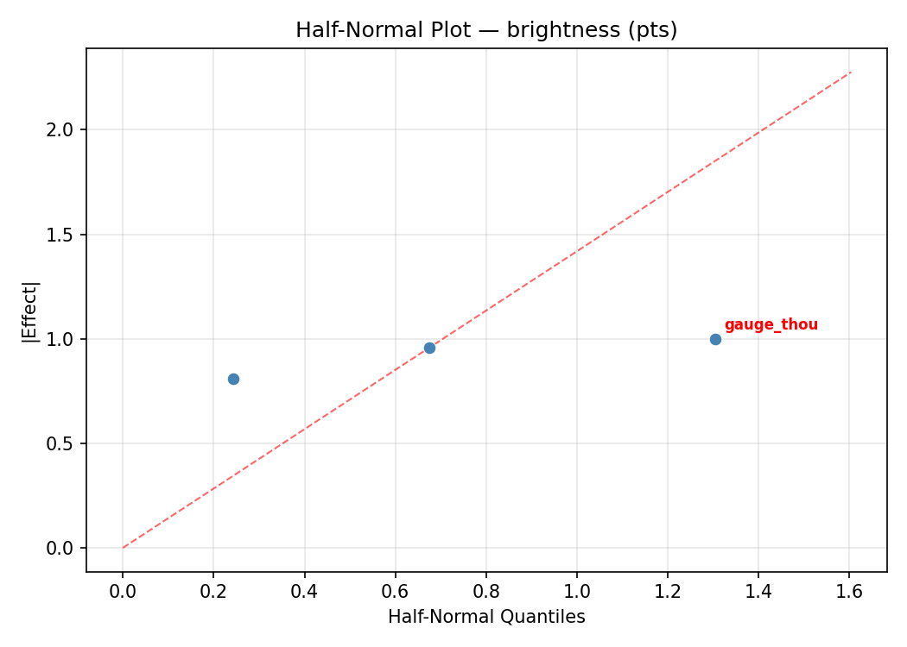
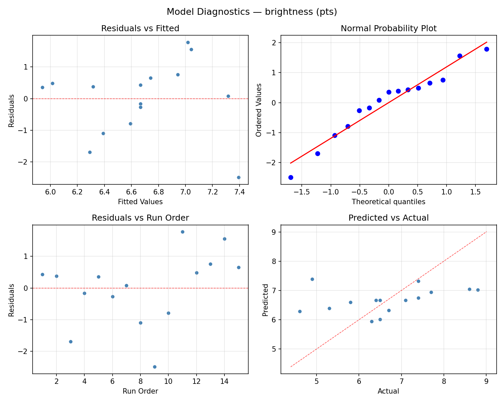
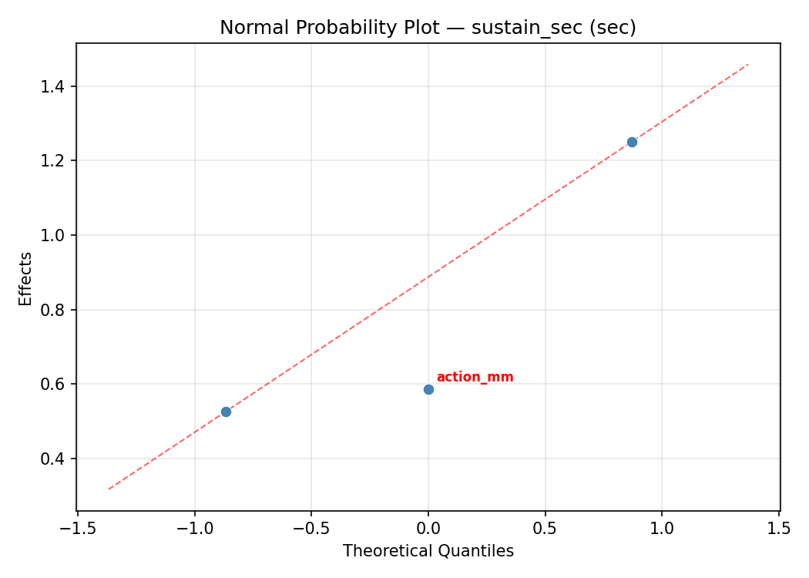
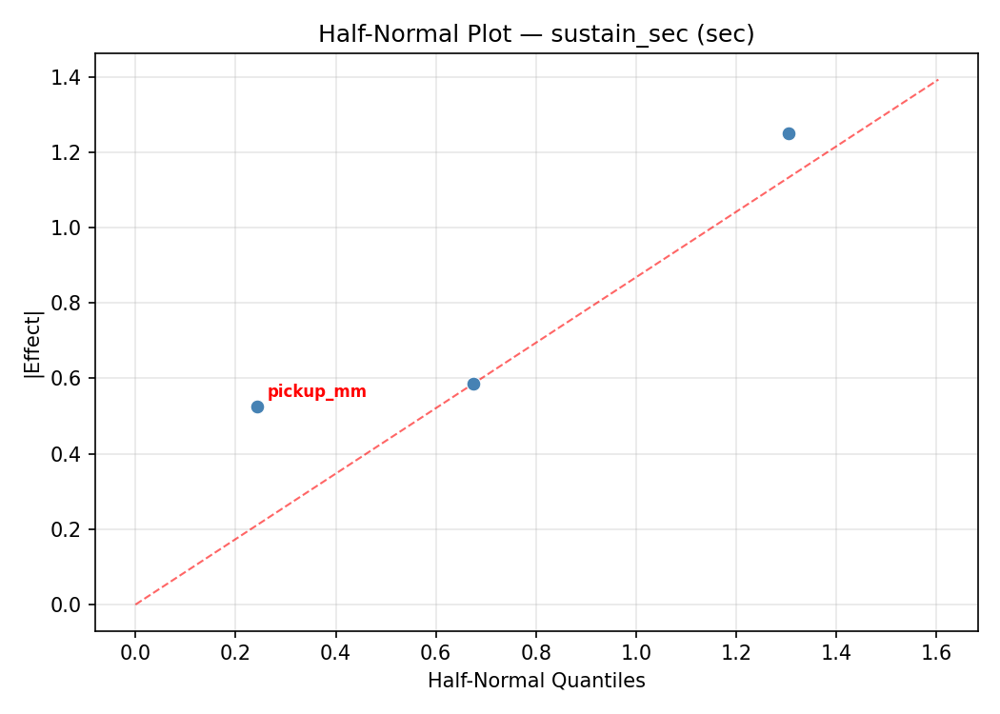
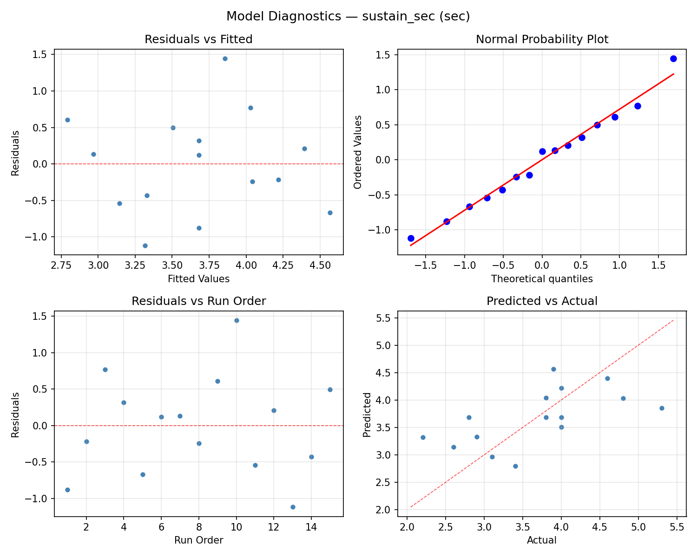

Summary
This experiment investigates guitar string tone optimization. Box-Behnken design to maximize brightness and sustain by tuning string gauge, action height, and pickup height.
The design varies 3 factors: gauge thou (thou), ranging from 9 to 13, action mm (mm), ranging from 1.5 to 3.0, and pickup mm (mm), ranging from 2 to 5. The goal is to optimize 2 responses: brightness (pts) (maximize) and sustain sec (sec) (maximize). Fixed conditions held constant across all runs include guitar type = solid_body, tuning = standard.
A Box-Behnken design was chosen because it efficiently fits quadratic models with 3 continuous factors while avoiding extreme corner combinations — requiring only 15 runs instead of the 8 needed for a full factorial at two levels.
Quadratic response surface models were fitted to capture potential curvature and factor interactions. The RSM contour plots below visualize how pairs of factors jointly affect each response.
Key Findings
For brightness, the most influential factors were gauge thou (64.4%), pickup mm (18.8%), action mm (16.7%). The best observed value was 8.8 (at gauge thou = 9, action mm = 1.5, pickup mm = 3.5).
For sustain sec, the most influential factors were action mm (44.4%), gauge thou (35.7%), pickup mm (19.9%). The best observed value was 5.3 (at gauge thou = 13, action mm = 2.25, pickup mm = 2).
Recommended Next Steps
- Run confirmation experiments at the predicted optimal settings to validate the model.
- Consider whether any fixed factors should be varied in a future study.
Experimental Setup
Factors
| Factor | Low | High | Unit |
|---|
gauge_thou | 9 | 13 | thou |
action_mm | 1.5 | 3.0 | mm |
pickup_mm | 2 | 5 | mm |
Fixed: guitar_type = solid_body, tuning = standard
Responses
| Response | Direction | Unit |
|---|
brightness | ↑ maximize | pts |
sustain_sec | ↑ maximize | sec |
Configuration
{
"metadata": {
"name": "Guitar String Tone Optimization",
"description": "Box-Behnken design to maximize brightness and sustain by tuning string gauge, action height, and pickup height"
},
"factors": [
{
"name": "gauge_thou",
"levels": [
"9",
"13"
],
"type": "continuous",
"unit": "thou"
},
{
"name": "action_mm",
"levels": [
"1.5",
"3.0"
],
"type": "continuous",
"unit": "mm"
},
{
"name": "pickup_mm",
"levels": [
"2",
"5"
],
"type": "continuous",
"unit": "mm"
}
],
"fixed_factors": {
"guitar_type": "solid_body",
"tuning": "standard"
},
"responses": [
{
"name": "brightness",
"optimize": "maximize",
"unit": "pts"
},
{
"name": "sustain_sec",
"optimize": "maximize",
"unit": "sec"
}
],
"settings": {
"operation": "box_behnken",
"test_script": "use_cases/157_guitar_string_tone/sim.sh"
}
}
Experimental Matrix
The Box-Behnken Design produces 15 runs. Each row is one experiment with specific factor settings.
| Run | gauge_thou | action_mm | pickup_mm |
|---|
| 1 | 11 | 1.5 | 2 |
| 2 | 11 | 2.25 | 3.5 |
| 3 | 13 | 2.25 | 5 |
| 4 | 13 | 2.25 | 2 |
| 5 | 11 | 2.25 | 3.5 |
| 6 | 11 | 2.25 | 3.5 |
| 7 | 9 | 2.25 | 5 |
| 8 | 13 | 1.5 | 3.5 |
| 9 | 11 | 1.5 | 5 |
| 10 | 13 | 3 | 3.5 |
| 11 | 9 | 2.25 | 2 |
| 12 | 11 | 3 | 5 |
| 13 | 9 | 1.5 | 3.5 |
| 14 | 9 | 3 | 3.5 |
| 15 | 11 | 3 | 2 |
Step-by-Step Workflow
1
Preview the design
$ python doe.py info --config use_cases/157_guitar_string_tone/config.json
2
Generate the runner script
$ python doe.py generate --config use_cases/157_guitar_string_tone/config.json \
--output use_cases/157_guitar_string_tone/results/run.sh --seed 42
3
Execute the experiments
$ bash use_cases/157_guitar_string_tone/results/run.sh
4
Analyze results
$ python doe.py analyze --config use_cases/157_guitar_string_tone/config.json
5
Get optimization recommendations
$ python doe.py optimize --config use_cases/157_guitar_string_tone/config.json
6
Multi-objective optimization
With 2 competing responses, use --multi to find the best compromise via Derringer–Suich desirability.
$ python doe.py optimize --config use_cases/157_guitar_string_tone/config.json --multi
7
Generate the HTML report
$ python doe.py report --config use_cases/157_guitar_string_tone/config.json \
--output use_cases/157_guitar_string_tone/results/report.html
Features Exercised
| Feature | Value |
|---|
| Design type | box_behnken |
| Factor types | continuous (all 3) |
| Arg style | double-dash |
| Responses | 2 (brightness ↑, sustain_sec ↑) |
| Total runs | 15 |
Analysis Results
Generated from actual experiment runs using the DOE Helper Tool.
Response: brightness
Top factors: gauge_thou (64.4%), pickup_mm (18.8%), action_mm (16.7%).
ANOVA
| Source | DF | SS | MS | F | p-value |
|---|
| Source | DF | SS | MS | F | p-value |
| gauge_thou | 2 | 6.0498 | 3.0249 | 1.480 | 0.2838 |
| action_mm | 2 | 0.3248 | 0.1624 | 0.079 | 0.9243 |
| pickup_mm | 2 | 0.5533 | 0.2767 | 0.135 | 0.8753 |
| Lack | of | Fit | 6 | 9.8788 | 1.6465 |
| Pure | Error | 2 | 4.0867 | | |
| Error | 8 | 13.9655 | 2.0433 | | |
| Total | 14 | 20.8933 | 1.4924 | | |
Pareto Chart

Main Effects Plot

Normal Probability Plot of Effects

Half-Normal Plot of Effects

Model Diagnostics

Response: sustain_sec
Top factors: action_mm (44.4%), gauge_thou (35.7%), pickup_mm (19.9%).
ANOVA
| Source | DF | SS | MS | F | p-value |
|---|
| Source | DF | SS | MS | F | p-value |
| gauge_thou | 2 | 1.6147 | 0.8074 | 3.784 | 0.0697 |
| action_mm | 2 | 1.5322 | 0.7661 | 3.591 | 0.0771 |
| pickup_mm | 2 | 0.4094 | 0.2047 | 0.959 | 0.4232 |
| Lack | of | Fit | 6 | 6.2810 | 1.0468 |
| Pure | Error | 2 | 0.4267 | | |
| Error | 8 | 6.7077 | 0.2133 | | |
| Total | 14 | 10.2640 | 0.7331 | | |
Pareto Chart

Main Effects Plot

Normal Probability Plot of Effects

Half-Normal Plot of Effects

Model Diagnostics

Response Surface Plots
3D surfaces fitted with quadratic RSM. Red dots are observed data points.
brightness action mm vs pickup mm

brightness gauge thou vs action mm

brightness gauge thou vs pickup mm

sustain sec action mm vs pickup mm

sustain sec gauge thou vs action mm

sustain sec gauge thou vs pickup mm

Multi-Objective Optimization
When responses compete, Derringer–Suich desirability finds the best compromise.
Each response is scaled to a 0–1 desirability, then combined via a weighted geometric mean.
Overall Desirability
D = 0.7293
Per-Response Desirability
| Response | Weight | Desirability | Predicted | Dir |
|---|
brightness |
1.5 |
|
8.09 0.8012 8.09 pts |
↑ |
sustain_sec |
1.0 |
|
4.21 0.6334 4.21 sec |
↑ |
Recommended Settings
| Factor | Value |
|---|
gauge_thou | 9 thou |
action_mm | 1.5 mm |
pickup_mm | 5 mm |
Source: from RSM model prediction
Trade-off Summary
Sacrifice = how much worse than single-objective best.
| Response | Predicted | Best Observed | Sacrifice |
|---|
sustain_sec | 4.21 | 5.30 | +1.09 |
Top 3 Runs by Desirability
| Run | D | Factor Settings |
|---|
| #12 | 0.5567 | gauge_thou=11, action_mm=2.25, pickup_mm=3.5 |
| #14 | 0.5438 | gauge_thou=11, action_mm=3, pickup_mm=2 |
Model Quality
| Response | R² | Type |
|---|
sustain_sec | 0.1603 | linear |
Full Multi-Objective Output
============================================================
MULTI-OBJECTIVE OPTIMIZATION
Method: Derringer-Suich Desirability Function
============================================================
Overall desirability: D = 0.7293
Response Weight Desirability Predicted Direction
---------------------------------------------------------------------
brightness 1.5 0.8012 8.09 pts ↑
sustain_sec 1.0 0.6334 4.21 sec ↑
Recommended settings:
gauge_thou = 9 thou
action_mm = 1.5 mm
pickup_mm = 5 mm
(from RSM model prediction)
Trade-off summary:
brightness: 8.09 (best observed: 8.80, sacrifice: +0.71)
sustain_sec: 4.21 (best observed: 5.30, sacrifice: +1.09)
Model quality:
brightness: R² = 0.7684 (quadratic)
sustain_sec: R² = 0.1603 (linear)
Top 3 observed runs by overall desirability:
1. Run #15 (D=0.6190): gauge_thou=11, action_mm=1.5, pickup_mm=5
2. Run #12 (D=0.5567): gauge_thou=11, action_mm=2.25, pickup_mm=3.5
3. Run #14 (D=0.5438): gauge_thou=11, action_mm=3, pickup_mm=2
Full Analysis Output
=== Main Effects: brightness ===
Factor Effect Std Error % Contribution
--------------------------------------------------------------
gauge_thou 1.5393 0.3154 64.4%
pickup_mm 0.4500 0.3154 18.8%
action_mm 0.4000 0.3154 16.7%
=== ANOVA Table: brightness ===
Source DF SS MS F p-value
-----------------------------------------------------------------------------
gauge_thou 2 6.0498 3.0249 1.480 0.2838
action_mm 2 0.3248 0.1624 0.079 0.9243
pickup_mm 2 0.5533 0.2767 0.135 0.8753
Lack of Fit 6 9.8788 1.6465 0.806 0.6460
Pure Error 2 4.0867 2.0433
Error 8 13.9655 2.0433
Total 14 20.8933 1.4924
=== Summary Statistics: brightness ===
gauge_thou:
Level N Mean Std Min Max
------------------------------------------------------------
11 7 6.0857 1.0542 4.6000 7.4000
13 4 7.6250 1.2500 6.4000 8.8000
9 4 6.7250 1.0782 5.3000 7.7000
action_mm:
Level N Mean Std Min Max
------------------------------------------------------------
1.5 4 6.4500 0.5323 5.8000 7.1000
2.25 7 6.6857 1.3850 4.6000 8.6000
3 4 6.8500 1.6543 4.9000 8.8000
pickup_mm:
Level N Mean Std Min Max
------------------------------------------------------------
2 4 6.3500 0.7724 5.3000 7.1000
3.5 7 6.8000 1.2845 4.6000 8.8000
5 4 6.7500 1.6980 4.9000 8.6000
=== Main Effects: sustain_sec ===
Factor Effect Std Error % Contribution
--------------------------------------------------------------
action_mm 0.8750 0.2211 44.4%
gauge_thou 0.7036 0.2211 35.7%
pickup_mm 0.3929 0.2211 19.9%
=== ANOVA Table: sustain_sec ===
Source DF SS MS F p-value
-----------------------------------------------------------------------------
gauge_thou 2 1.6147 0.8074 3.784 0.0697
action_mm 2 1.5322 0.7661 3.591 0.0771
pickup_mm 2 0.4094 0.2047 0.959 0.4232
Lack of Fit 6 6.2810 1.0468 4.907 0.1789
Pure Error 2 0.4267 0.2133
Error 8 6.7077 0.2133
Total 14 10.2640 0.7331
=== Summary Statistics: sustain_sec ===
gauge_thou:
Level N Mean Std Min Max
------------------------------------------------------------
11 7 4.0286 0.8301 2.8000 5.3000
13 4 3.3250 0.6801 2.6000 4.0000
9 4 3.4250 1.0210 2.2000 4.6000
action_mm:
Level N Mean Std Min Max
------------------------------------------------------------
1.5 4 4.1250 1.0751 2.8000 5.3000
2.25 7 3.6714 0.8538 2.2000 4.8000
3 4 3.2500 0.5447 2.6000 3.9000
pickup_mm:
Level N Mean Std Min Max
------------------------------------------------------------
2 4 3.6250 0.5560 2.8000 4.0000
3.5 7 3.8429 0.7786 2.6000 4.8000
5 4 3.4500 1.3279 2.2000 5.3000
Optimization Recommendations
=== Optimization: brightness ===
Direction: maximize
Best observed run: #11
gauge_thou = 9
action_mm = 1.5
pickup_mm = 3.5
Value: 8.8
RSM Model (linear, R² = 0.4316, Adj R² = 0.2766):
Coefficients:
intercept +6.6667
gauge_thou -0.2250
action_mm -0.0125
pickup_mm +1.0375
RSM Model (quadratic, R² = 0.9582, Adj R² = 0.8831):
Coefficients:
intercept +6.4000
gauge_thou -0.2250
action_mm -0.0125
pickup_mm +1.0375
gauge_thou*action_mm +0.4250
gauge_thou*pickup_mm -0.7750
action_mm*pickup_mm +0.0500
gauge_thou^2 +0.9500
action_mm^2 +0.4750
pickup_mm^2 -0.9250
Curvature analysis:
gauge_thou coef=+0.9500 convex (has a minimum)
pickup_mm coef=-0.9250 concave (has a maximum)
action_mm coef=+0.4750 convex (has a minimum)
Notable interactions:
gauge_thou*pickup_mm coef=-0.7750 (antagonistic)
gauge_thou*action_mm coef=+0.4250 (synergistic)
Predicted optimum (from quadratic model, at observed points):
gauge_thou = 9
action_mm = 1.5
pickup_mm = 3.5
Predicted value: 8.4875
Surface optimum (via L-BFGS-B, quadratic model):
gauge_thou = 9
action_mm = 1.5
pickup_mm = 4.92905
Predicted value: 9.3271
Model quality: Excellent fit — surface predictions are reliable.
Factor importance:
1. pickup_mm (effect: 2.1, contribution: 55.1%)
2. gauge_thou (effect: 1.2, contribution: 32.0%)
3. action_mm (effect: 0.5, contribution: 12.9%)
=== Optimization: sustain_sec ===
Direction: maximize
Best observed run: #10
gauge_thou = 13
action_mm = 2.25
pickup_mm = 2
Value: 5.3
RSM Model (linear, R² = 0.1600, Adj R² = -0.0691):
Coefficients:
intercept +3.6800
gauge_thou +0.0375
action_mm -0.0375
pickup_mm -0.4500
RSM Model (quadratic, R² = 0.7445, Adj R² = 0.2846):
Coefficients:
intercept +4.1000
gauge_thou +0.0375
action_mm -0.0375
pickup_mm -0.4500
gauge_thou*action_mm -0.5750
gauge_thou*pickup_mm +0.1500
action_mm*pickup_mm -0.4000
gauge_thou^2 -0.1875
action_mm^2 -0.9375
pickup_mm^2 +0.3375
Curvature analysis:
action_mm coef=-0.9375 concave (has a maximum)
pickup_mm coef=+0.3375 convex (has a minimum)
gauge_thou coef=-0.1875 concave (has a maximum)
Notable interactions:
gauge_thou*action_mm coef=-0.5750 (antagonistic)
action_mm*pickup_mm coef=-0.4000 (antagonistic)
Predicted optimum (from quadratic model, at observed points):
gauge_thou = 9
action_mm = 2.25
pickup_mm = 2
Predicted value: 4.8125
Surface optimum (via L-BFGS-B, quadratic model):
gauge_thou = 9
action_mm = 2.625
pickup_mm = 2
Predicted value: 5.0469
Model quality: Good fit — general trends are captured, some noise remains.
Factor importance:
1. action_mm (effect: 1.0, contribution: 47.7%)
2. pickup_mm (effect: 0.9, contribution: 43.5%)
3. gauge_thou (effect: 0.2, contribution: 8.8%)